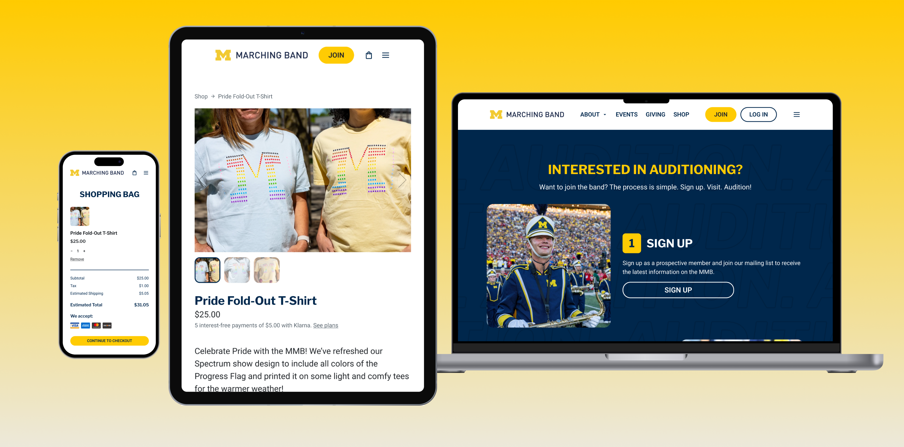
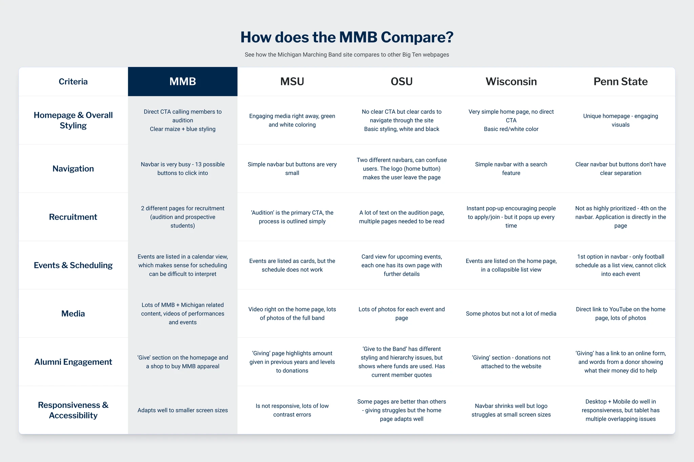
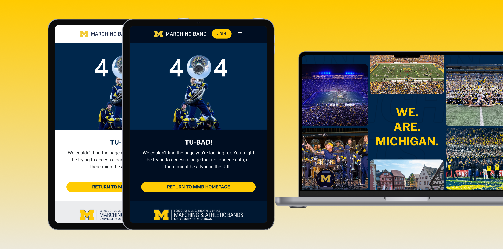
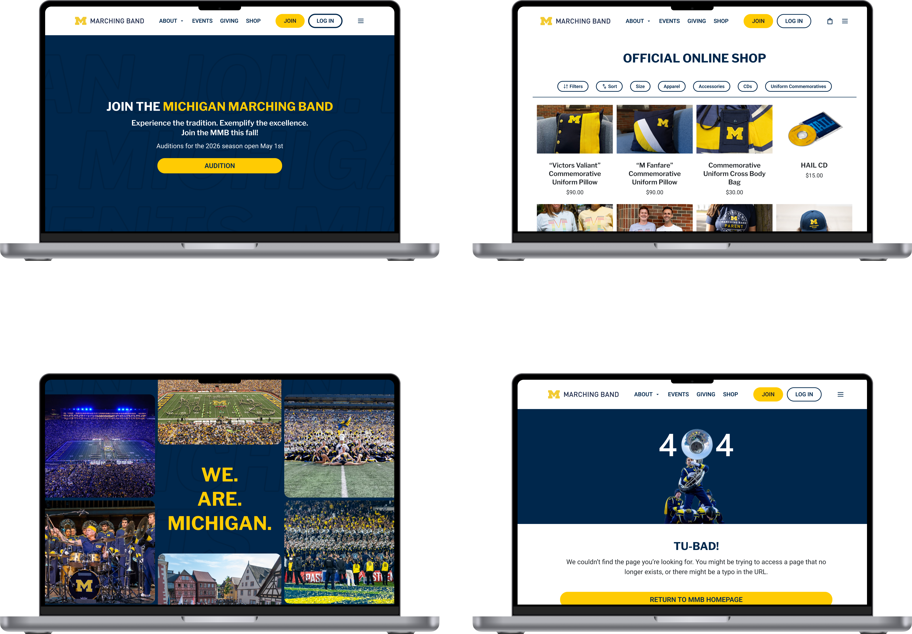

Problem Solving
We had 3 specific goals with this redesign:
Modernize and refresh, restructure information architecture, and show off the MMB.
To start this procress, our team created templates for simple use later on in the design process.

Redesigning the Michigan Marching Band's website, with a focus on navigation, first time users, and a unique shopping experience. Get a quick summary from a presentation.

The current site contains all necessary information for potential band students, alumni, and the casual fan, but sometimes displays it in a non-intuitive way.
Overall navigation and most frequented resources were not prioritized on the site.
To start, we created a button component library that follows U-M's style guide, and performed a competitive analysis looking at other B1G Ten schools.

We had 3 specific goals with this redesign:
Modernize and refresh, restructure information architecture, and show off the MMB.
To start this procress, our team created templates for simple use later on in the design process.
Our design focused on and improved 4 crucial areas:
Improved Navigation and IA - Condensed information in the navbar, added simple shop filters, and reorganized product page hierarchy to improve user flow throughout the site.
Modern Elements - Added modern design elements to enhance the site's visual presentation. Dark mode, blurred/transparent cards, & large visual callout sections help MMB stand out from competitors.
Enhanced Responsiveness - Developed over desktop, tablet, and mobile breakpoints, maintaining clear navigation and consistency across device sizes.
Restructured Audition page - Prioritized first-time users' understanding of the audition process while sparking enthusiasm through imagery of recent MMB experiences.

The new design has a revamped home, audition, shop, and checkout pages.
The designs simplify the audition process for incoming students, and use exciting imagery to users excited about joining the Michigan Marching Band.
